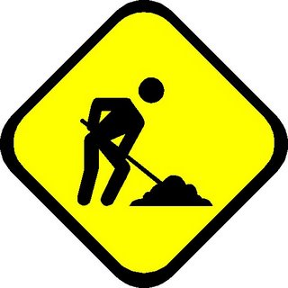

Credit to Jgrafton for the invincibul page design.
ProceedingsProceedings of SIGBOVIK 2011 are available here. Copies in dead-tree form may be ordered here. Call for PapersSIGBOVIK celebrates the inestimable research work of Harry Q. Bovik. Since his research has been so variegated, the conference is traditionally a forum for discussion on many subjects: Inept Expert Systems, Deep Space Navigation, Science, Perplexity Theory, Thaughmaturgic Circle, Self-Adjusting Computation, Denotational Semantics of Pidgin and Creole, Discard-based Search, Natural Intelligence, Artificial Stupidity, Elbow Macaroni, Rasterized Love Triangles, Synergistic Hyperparadigmatism, Computational Archaeolinguistics, Hyper Driven Devices, and any other topic approved by the conference organizers. The Program Committee seeks submissions on the entire range of topics. Submissions are now being accepted via the EasyChair submission system. Please provide legitimate contact information to EasyChair; the name(s) listed on the paper itself, not the contact information provided to EasyChair, will be used for the purposes of the conference. RESEARCH IS ALWAYS UNDER CONSTRUCTION |
Upcoming EvenceStay tuned for next year. Linkx
AnnouncementsWe have an announcemence mailing list that you can subscribe to. |